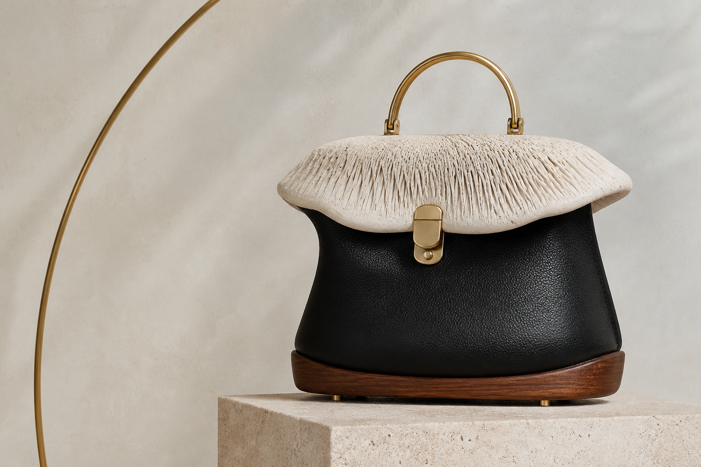
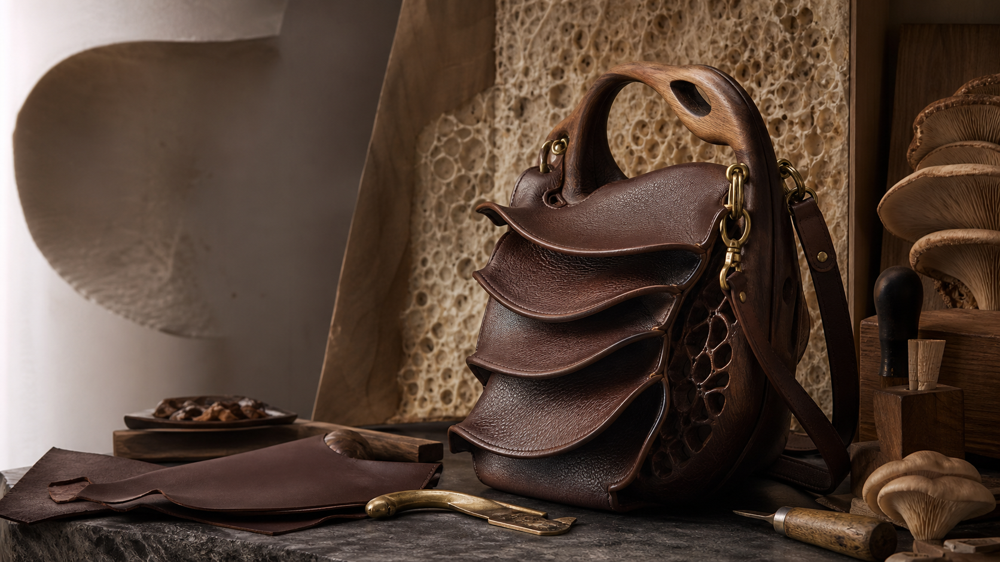

Sacs sculpturaux en cuir, bois et laiton
Gabou faconne des sacs haut de gamme inspires par les formes champignon et mycelium, entre objet d'art et compagnon quotidien.

Matieres d'exception
Cuir pleine fleur, bois massif poli, laiton patine et structures mycelium cultivees composent une presence dense, precise, durable.
Trois silhouettes, une meme exigence
Chaque modele est produit en petites series, avec un equilibre entre sculpture, usage et reparabilite.
Spore
Coiffe mycelium ivoire, corps en cuir noir, base en noyer.
Lamelle
Cuir brun plisse, anse bois sculptee et attaches laiton.
Nocturne
Volume noir laque, veinage organique et lumiere cuivre.

L'atelier
Chaque sac nait d'un dialogue entre matiere, geste et temps. Les pieces sont assemblees, poncees et patinees en atelier.
Decouvrir l'atelierPresentation privee
Echangeons autour d'une piece existante, d'une commande speciale ou d'une collaboration matiere.